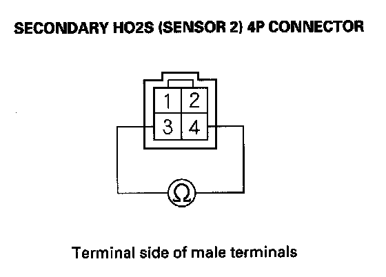
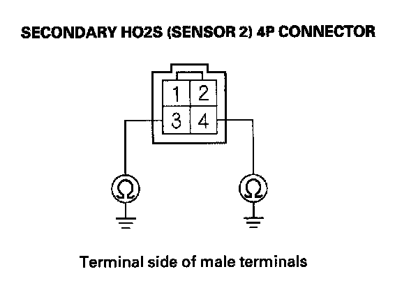
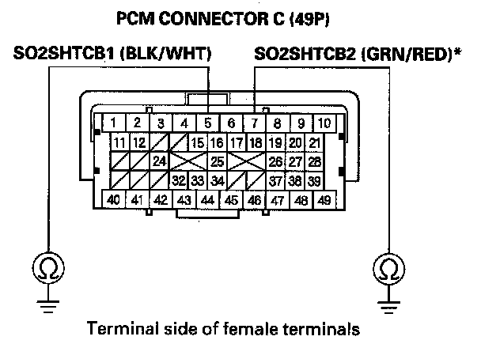
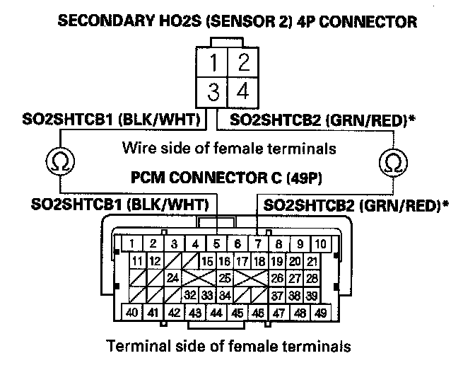
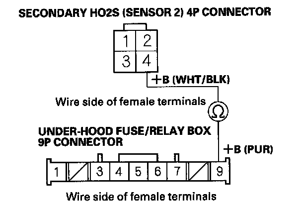
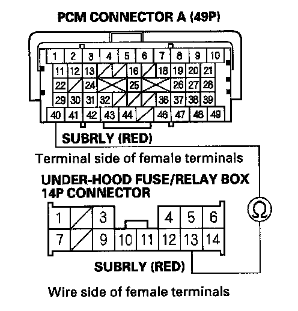

DTC Troubleshooting
DTC P0141: Rear Secondary HO2S (Bank 1, Sensor 2) Heater Circuit MalfunctionDTC P0161: Front Secondary HO2S (Bank 2, Sensor 2) Heater Circuit Malfunction
NOTE:
- Before you troubleshoot, record all freeze data and any on-board snapshot, and review the general troubleshooting information.
- Information marked with an asterisk (*) applies to the front bank (Bank 2).
1. Turn the ignition switch ON (II).
2. Clear the DTC with the HDS.
3. Start the engine.
4. Check for Temporary DTCs or DTCs with the HDS.
Is DTC P0141 and/or P0161* indicated?
YES - Go to step 5.
NO - Intermittent failure, the system is OK at this time. Check for poor connections or loose terminals at the secondary HO2S (Sensor 2), the under-hood fuse/relay box (PGM-FI subrelay) and the PCM.
5. Turn the ignition switch OFF.
6. Check these fuses:
- No. 11 A/F sensor (AFHT+) (15 A) fuse in the under-hood fuse/relay box.
- No. 3 R/B 1 (30 A) fuse in the main under-hood fuse box.
- No. 7 +B FAN TIMER (7.5 A) fuse in the under-hood fuse/relay box
Are any of the fuses blown?
YES - Repair short in the wire between the A/F sensors, the under-hood fuse/relay box (PGM-FI subrelay) and the fuse, then go to step 21.
NO - Go to step 7.
7. Disconnect the secondary HO2S (Sensor 2) 4P connector.

8. At the secondary HO2S (Sensor 2) side, measure resistance between secondary HO2S (Sensor 2) 4P connector terminals No. 3 and No. 4.
Is there 5.4 - 6.6 ohms at room temperature?
YES - Go to step 9.
NO - Go to step 20.

9. At the secondary HO2S (sensor 2) side, check for continuity between body ground and secondary HO2S (Sensor 2) 4P connector terminals No. 3 and No. 4 individually.
Is there continuity?
YES - Go to step 20.
NO - Go to step 10.
10. Jump the SCS line with the HDS.
11. Disconnect PCM connector C (49P).

12. Check for continuity between PCM connector terminal C5 (C7)* and body ground.
Is there continuity?
YES - Repair short in the wire between the PCM (C5 (C7)*) and the secondary HO2S (Sensor 2), then go to step 21.
NO - Go to step 13.

13. Check for continuity between secondary HO2S (Sensor 2) 4P connector terminal No. 3 and PCM connector terminal C5 (C7)*.
Is there continuity?
YES - Go to step 14.
NO - Repair open in the wire between the PCM (C5 (C7)*) and the secondary HO2S (Sensor 2), then go to step 21.
14. Disconnect the under-hood fuse/relay box9P connector.

15. Check for continuity between secondary HO2S (Sensor 2) 4P connector terminal No. 4 and under-hood fuse/relay box 9P connector No. 9.
Is there continuity?
YES - Go to step 16.
NO - Repair open in the wire between the secondary HO2S (Sensor 2) and the under-hood fuse/relay box,then go to step 21.
16. Disconnect PCM connector A (49P).
17. Disconnect the under-hood fuse/relay box 14P connector.

18. Check for continuity between under-hood fuse/relay box 14P connector terminal No. 13 and PCM connector terminal A40.
Is there continuity?
YES - Go to step 19.
NO - Repair open in the wire between the PCM (A40) and the under-hood fuse/relay box, then go to step 21.
19. Test the PGM-FI subrelay in the under-hood fuse/relay box.
Is the PGM-FI subrelay OK?
YES - Go to step 27.
NO - Replace the relay control module (under-hood fuse/relay box). then go to step 21.
20. Replace the secondary HO2S (Sensor 2).
21. Reconnect all connectors.
22. Turn the ignition switch ON (II).
23. Reset the PCM with the HDS.
24. Do the PCM idle learn procedure.
25. Check for Temporary DTCs or DTCs with the HDS.
Is DTC P0141 and/or P0161* indicated?
YES - Check for poor connections or loose terminals at the secondary HO2S (Sensor 2), the under-hood fuse/relay box (PGM-FI subrelay), and the PCM, then go to step 1.
NO - Go to step 26.
26. Monitor the OBD STATUS for DTC P0141 and/or P0161 * in the DTCs MENU with the HDS.
Does the screen indicate PASSED?
YES - Troubleshooting is complete. If any other Temporary DTCs or DTCs were indicated in step 25, go to the indicated DTCs troubleshooting.
NO - If the screen indicates FAILED, check for poor connections or loose terminals at the secondary HO2S (Sensor 2), the under-hood fuse/relay box (PGM-FI subrelay), and the PCM, then go to step 1. If the screen indicates NOT COMPLETED, keep idling until a result comes on.
27. Reconnect all connectors.
28. Update the PCM if it does not have the latest software, or substitute a known-good PCM.
29. Check for Temporary DTCs or DTCs with the HDS.
Is DTC P0141 and/or P016V indicated?
YES - Check for poor connections or loose terminals at the secondary HO2S (Sensor 2), the under-hood fuse/relay box (PGM-FI subrelay), and the PCM. If the PCM was updated, substitute a known-good PCM, then recheck. If the PCM was substituted, go to step 1.
NO - Go to step 30.
30. Monitor the OBD STATUS for DTC P0141 and/or P0161- in the DTCs MENU with the HDS.
Does the screen indicate PASSED?
YES - If the PCM was updated, troubleshooting is complete. If the PCM was substituted, replace the original PCM. If any other Temporary DTCs or DTCs were indicated in step 29, go to the indicated DTCs troubleshooting.
NO - If the screen indicates FAILED, check for poor connections or loose terminals at the secondary HO2S (Sensor 2), the under-hood fuse/relay box (PGM-FI subrelay), and the PCM. If the PCM was updated, substitute a known-good PCM, then recheck. If the PCM was substituted, go to step 1. If the screen indicates NOT COMPLETED, keep idling until a result comes on.